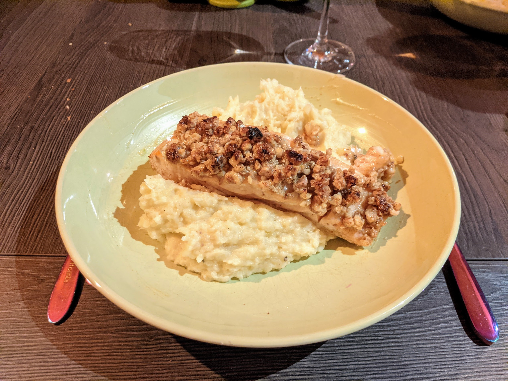

Saumon en croûte de noix

Ici avec une purée de panais
Pour deux personnes :
- Deux pavés de saumon (avec leur peau)
- Une cuillère à soupe de miel
- Une dizaine de noix
- (Facultatif) Une cuillère à soupe de chapelure
- Une noisette de beurre
- Une cuillère à soupe de moutarde de Dijon
- Une cuillère à soupe de sirop d'érable
- Sel, poivre
- Faire préchauffer le four à 215°C. Faire fondre le beurre quelques secondes (littéralement) au micro-ondes.
- Décortiquer les noix, et les mixer vite fait avec la chapelure et le beurre fondu.
- Disposer les pavés de saumon sur une plaque de four recouverte de papier sulfurisé, du côté peau. Mélanger moutarde et sirop d'érable, et badigeonner le dessus des saumons du mélange.
- Ajouter le mélange noix/chapelure sur le dessus en tassant avec les doigts pour que ça fasse une belle croûte.
- Enfourner pendant 4 minutes par centimère d'épaisseur sur la partie la plus épaisse du saumon (par exemple, 2cm → 8 minutes).
- Servir immédiatement, avec par exemple de la purée ou du riz.
Remarque : on peut remplacer les noix par un autre type de noix (pécan, noisettes, amandes…), et le mélange moutarde / sirop d'érable par n'importe quel mélange un peu épais, collant, et sucré. Par exemple, de la sauce teriyaki avec des amandes, ça doit bien marcher.
Retour à la liste des recettes